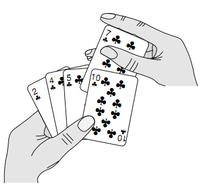
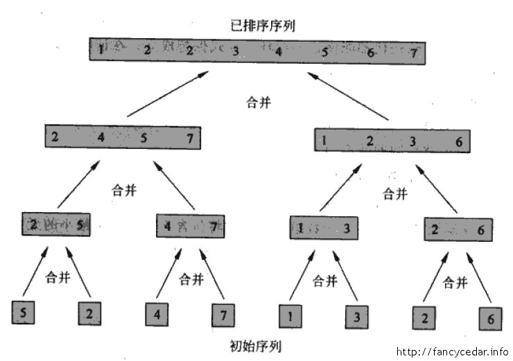

简单排序
1.插入排序
插入排序的就像是在玩扑克的时候给扑克排序一样。开始时，我们的左手为空，然后每次拿一张牌并且将它插入到左手中正确的位置。为了找到一张牌的正确位置，我们从右向左将它与在手中的牌进依次行比较。
每次比较的时候，如果比较的那张牌比右手的那张牌大，就将它向右移动一个位置，直到找到小于等于拿到的牌的位置，将右手的牌放到找到的这张牌的右侧。

图1 DchGr
C 语言插入排序代码：
void insertion_sort(int *A) { int i, j; int key; for (j = 1; A[j] != 0; j++) { key = A[j]; //Insert A[j] into the sorted sequence A[1..j-1]. i = j - 1; while ( i >= 0 && A[i] > key) { A[i + 1] = A[i]; i = i - 1; } A[i + 1] = key; } }
冒泡排序与插入排序虽然拥有相同的执行时间，但两种算法需要交换的次换却很大不同。很多现代的算法教科书避免使用冒泡排序，而用插入排序取代之。
2.归并排序
还是以扑克牌为例子，假设桌上有两堆牌，每堆都已排好序，最小的牌在顶上，最大的牌在最底。归并排序的主要思想就是将这两堆牌合并成单一的排好序的牌堆。基本步骤是从两堆牌最顶上两张牌牌中，选出较小的一张，然后将这张牌从其堆上移开并放到输出堆中。重复这个步骤，直到有一个输入堆为空，这时我们需要做的仅仅是把剩下的输入堆的牌全部到放到输出堆中即可。
剩下的工作就是递归调用这个函数，使全部的牌堆都正确的排序。

图2 merge
C 语言归并排序代码：
void merge(int *A, int p, int q, int r) { /* 数组A[n], p、q和r都是数组下标，满足p <= q < r。 * 假设数组A[p..q]和A[q+1..r]都已经排好序。函数合并 * 这两个子数组形成单一的已排好序的子数组并代替当前的子数组A[p..r]。 */ int n1, n2, i, j, k; n1 = q - p + 1; n2 = r - q; int L[n1], R[n2]; for (i = 0; i < n1; i++) L[i] = A[p + i]; for (j = 0; j < n2; j++) R[j] = A[q + j + 1]; i = j = 0; k = p; while (i < n1 && j < n2) { if (L[i] <= R[j]) A[k++] = L[i++]; else A[k++] = R[j++]; } for ( ; i < n1; i++) A[k++] = L[i]; for ( ; j < n2; j++) A[k++] = R[j]; } void merge_sort(int *A, int p, int r) { int q; if (p < r) { q = (p + r) / 2; merge_sort(A, p, q); merge_sort(A, q + 1, r); merge(A, p, q, r); } }
归并排序的时间复杂度为 O(nlgn)。